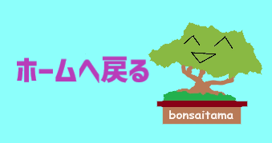

三輪穂乃香. (2021, April 6). おびかけ編集部がゆく！ ミュージアムさんぽ【第14歩】／大宮盆栽美術館. OBIKAKE. https//obikake.com/column/18194/
ごあいさつ | Greeting. (2010). さいたま市大宮盆栽美術館. https:///www.bonsai-art-museum.jp/ja/facilities/greeting/
大宮盆栽村 - Wikipedia. (2024, June 22). Wikipedia. https://ja.wikipedia.org/wiki/%E5%A4%A7%E5%AE%AE%E7%9B%86%E6%A0%BD%E6%9D%91
企画展夏休みこどもぼんさい美術館学習ノート. (2022). さいたま市大宮盆栽美術館.
Bluefruit. (n.d.). 埼玉県イラスト｜無料イラスト・フリー素材なら「イラストAC」. イラストAC. https://www.ac-illust.com/main/search_result.php?word=%E5%9F%BC%E7%8E%89%E7%9C%8C
